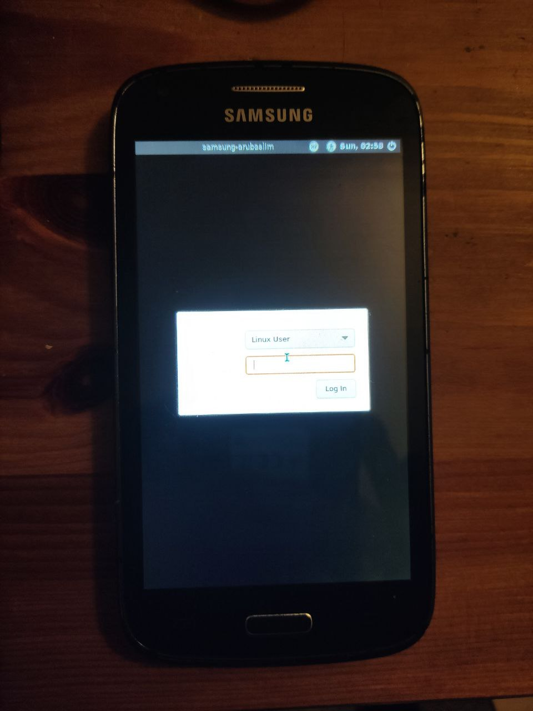

Samsung Galaxy Core (samsung-arubaslim)
|
 Samsung Galaxy Core I8260/I8262 | |
| Manufacturer | Samsung |
|---|---|
| Name | Galaxy Core I8260/I8262 (2013) |
| Codename | samsung-arubaslim |
| Released | 2013 |
| Category | testing |
| Original software | Android 4.1.2 (Jelly Bean) on Linux 3.4.0. |
| postmarketOS kernel | 3.5.1 |
| Hardware | |
| Chipset | Qualcomm Snapdragon S4 Play (MSM8225) |
| CPU | Dual-core 1.2 GHz Cortex-A5 |
| GPU | Qualcomm Adreno 203 GPU |
| Display | TFT display, 480 x 800 pixels, 5:3 ratio (~217 ppi density) |
| Storage | 8 GB flash memory, microSDXC slot (up to 32/64 GB) |
| Memory | 1 GB |
| Architecture | armv7 |
{kind=link}
| USB Networking |
Works
|
|---|---|
| Flashing |
Works
|
| Touchscreen |
Works
|
| Display |
Works
|
| WiFi |
Broken
|
| FDE |
Broken
|
| Mainline |
Broken
|
| Battery |
Broken
|
| 3D Acceleration |
Broken
|
| Audio |
Broken
|
| Bluetooth |
Broken
|
| Camera |
Broken
|
| GPS |
Broken
|
| Mobile data |
Broken
|
| SMS |
Broken
|
| Calls |
Broken
|
| USB OTG | |
| NFC | |
| Accelerometer |
Broken
|
|---|---|
| Magnetometer | |
| Ambient Light | |
| Proximity | |
| Hall Effect | |
| Barometer | |
| Power Sensor | |
| Camera Flash | |
|---|---|
| Keyboard | |
| Touchpad | |
| USB-A | |
| HDMI/DP | |
| Ir TX | |
| Ir RX | |
| Stylus | |
| Haptics | |
| Ethernet | |
| FOSS bootloader | |
Contributors
Users owning this device
- AAT596 (Notes: I8260 variant, CM13)
- TryzenAlpensky (Notes: Perfect condition.)
Basic Information
Samsung Galaxy Core GT-I8260 single sim card slot model and Samsung Galaxy Core GT-I8262 dual sim card variant are smartphone manufactured by Samsung Electronics that runs on the open source Android 4.1.2 Jellybean operating system. Announced by Samsung in early May 2013, the Dual-SIM model has been released in mid-to-late May 2013, and the single-SIM version for July 2013.
Requirements
The Samsung Galaxy Core I8260/I8262 already comes with an unlocked bootloader.
The only requirement is having TWRP installed on the device (you need to flash it via ODIN). Download here.
Although there are newer TWRP versions for this phone, such as this one or that one, they do not work properly on the I8260 variant, at least. The NovaFusion TWRP provided above is known to work properly.
Installation
There are no special tweaks needed for the installation. Check the installation guide.
The recommended method I use is flashing an Android recovery zip through TWRP, `pmbootstrap export` and copying the generated zip to the device while it's in recovery mode (adb push). Flashing to userdata is recommended, as system partition is very small.
What works
- Booting
- SSH through USB cable
- Display
What does not work
- Everything else, such as WiFi, Bluetooth, Audio, GPU, Hardware Acceleration...
Note: Tried to install the firmware `linux-firmware-ath6k` to see if WiFi works (like it's done on other devices), without success.
Partition Scheme
~ # cat /proc/partitions
major minor #blocks name
179 0 7634944 mmcblk0
179 1 20 mmcblk0p1
179 2 175 mmcblk0p2
179 3 20480 mmcblk0p3
179 4 1 mmcblk0p4
179 5 1000 mmcblk0p5
179 6 1000 mmcblk0p6
179 7 2000 mmcblk0p7
179 8 12288 mmcblk0p8
179 9 3072 mmcblk0p9
179 10 3072 mmcblk0p10
179 11 4096 mmcblk0p11
179 12 8192 mmcblk0p12
179 13 12288 mmcblk0p13
179 14 4096 mmcblk0p14
179 15 4096 mmcblk0p15
179 16 12288 mmcblk0p16
179 17 24576 mmcblk0p17
179 18 4096 mmcblk0p18
179 19 512 mmcblk0p19
179 20 2048 mmcblk0p20
179 21 1331200 mmcblk0p21
179 22 737280 mmcblk0p22
179 23 327680 mmcblk0p23
179 24 5115488 mmcblk0p24
~ # df -h
Filesystem Size Used Available Use% Mounted on
tmpfs 421.3M 128.0K 421.2M 0% /dev
tmpfs 421.3M 12.0K 421.3M 0% /tmp
/dev/block/mmcblk0p22
709.5M 12.9M 696.6M 2% /cache
/dev/block/mmcblk0p24
4.8G 1.3G 3.5G 27% /data
/dev/block/mmcblk0p24
4.8G 1.3G 3.5G 27% /sdcard
/dev/block/mmcblk0p21
936.4M 714.5M 221.9M 76% /system
/dev/block/mmcblk0p23
315.2M 45.0M 270.2M 14% /preload
/dev/block/mmcblk0p12
7.9M 4.1M 3.8M 52% /persist
/dev/block/mmcblk0p16
11.8M 4.2M 7.7M 35% /efs
Hardware status
Status for Mainline (M) kernel:
Based on deviceinfohw.ru:
| Status (M) | Hardware | Info (M) |
|---|---|---|
| N | Booting | boot.img has restriction of approx 8MB, which is /boot partition size. |
| N | USB Networking | The device is recognized by the computer if it's connected by USB. |
| N | Panel | ? |
| N | Touchscreen | MSM sec_touch for touchscreen is used. |
| N | SD Card | MicroSD card recognition. |
| N | eMMC | Samsung L7U00M for eMMC is used. |
| N | GPS | |
| N | WiFi | ATH6KL SDIO for WiFi is used. |
| N | Bluetooth | ATH6KL SDIO for Bluetooth is used. |
| N | GPIO keys | |
| N | Battery and Charger | Texas Instruments BQ27425-G1 and Onsemi FAN54013 are used. |
| N | PMIC | ? |
| N | Sound | msmaudio for audio is used. |
| N | Voice processor | |
| N | Accelerometer | Bosch Sensortec BMA2x2 (or BMC150) accelerometer is used. |
| N | Magnetometer | Bosch Sensortec BMM050 (or BMC150) for magnetometer is used. |
| N | Light sensor | PROXIMITY GP2A for proximity is used. |
| N | Front/rear camera | Samsung s5k4ecgx and MSM sr030pc50 camera sensor are used. |
| N | GPU | Adreno (TM) 203 |
Downstream Information
No framebuffer console
This device does not have framebuffer console. In other words, kernel output won't be shown on screen during the boot process.
If 'console' UI is selected, the screen will be black, but an USB can be connected to the device for SSH connection and USB Network.
Logs
Note: Although having the I8260 variant, I (AAT596) used a ROM for I8262, as both devices almost share the same hardware.
However, I8260 has one-SIM only, and I8262 has dual-SIM.
- dmesg from TWRP 2.7 (original I8260 port): https://pastebin.com/raw/izu4HfeV
- dmesg from CM12 (I8262 ROM port, I8260 device): https://pastebin.com/raw/YRdm1pVt
- adb logcat from CM12 (I8262 ROM port, I8260 device): adb-logcat-CM12-I8262ROM_I8260.txt